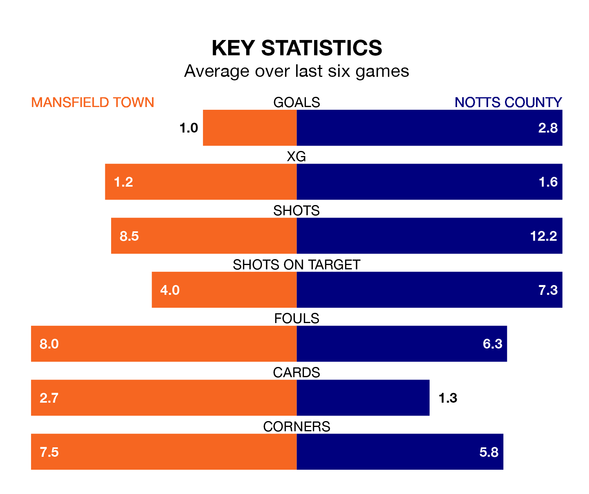

Mansfield Town host Notts County in Saturday's match at the One Call Stadium looking to bounce back from defeat last time out in EFL League Two.
The Stags, who sit third in the league after 28 games, fell to a 2-1 away defeat to AFC Wimbledon on January 27.
They face a County side who secured a draw in their last match, a 1-1 tie with Barrow, and who sit seventh in the table.
With 61 goals in 28 games so far this season, County are the league's joint-highest scorers with 2.2 goals per game. But they are conceding more than average too, letting in 53 goals at a rate of 1.9 per game.
Mansfield are also above average scorers, with 1.7 goals per game, compared to a league average of 1.5. They have conceded 0.9 goals per game.
In Macaulay Langstaff, the visitors have the league's sharpest shooter so far this season. He has notched 20 goals in 28 appearances.
His goal rate of one every 122 minutes is quicker than that of Davis Keillor-Dunn, Town's top scorer with a goal every 158 minutes, and a total of 14 goals in 28 games.
In the last 10 years, Mansfield and County have played each other on 11 occasions. Mansfield won seven of them, County two, and they drew twice.
On average, the Stags scored 2.0 goals and County 0.7 in those matches.
Their last meeting was on October 14, when Mansfield won 4-1 away.
The Stags are in disappointing form in EFL League Two, with one win and three draws from their last six games.
With two wins and two draws over that period, County's form is slightly better – they have taken eight points from 18, compared to the home side's six.
Updated: 13:20 (UTC), 29/01/24